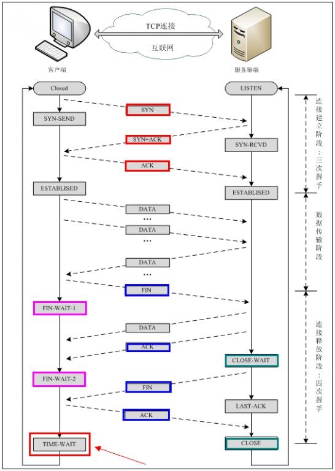

解决ProxySQL连接MySQL产生大量TIME_WAIT连接的问题
2018/01/10
posted in
ProxySQL
2018/01/10
posted in
ProxySQL
有时候解决一个问题很简单，但是其中发现问题和深入问题的过程却值得我们反复思考
最近在测试环境新搭的一套proxysql忽然无法正常登录了，一直提示连接hostgroup超时。
我首先跳过proxysql，直接连接后端的mysql节点，确认是proxysql的问题还是mysql的问题。
但是连接一直处于进行中的状态，不提示登录成功也不提示登录失败。
初步判断应该是mysql的连接数被打满了。
使用命令查看连接数
netstat -naplt|grep 6033|wc -l
连接数显示mysql的连接已经被占满了。
由于后端的mysql节点只通过proxysql来访问，其他的程序并不知道mysql实例的端口号，所以尝试重启proxysql来释放连接。
再次尝试连接后端mysql节点，这次直接提示连接数过多，连接失败。
显然，重启proxysql并没有成功的解决问题。
仔细查看netstat输出的信息。
发现绝大部分的连接都是TIME_WAIT。
之后，通过重启mysql暂时的清理掉了这些连接，但是，首先，重启mysql的成本过高，在线上根本不可行，其次，暂时清理掉TIME_WAIT的连接之后，TIME_WAIT的连接数又很快的涨了上来。这并没有从根本上解决问题。
尝试通过proxysql的参数进行连接数限制，但是，TIME_WAIT状态的连接根本不被计算在proxysql的连接中，无法被限制。
查阅资料暂时解决了问题
查询了相关资料后，发现可以通过修改Linux内核参数来优化TCP连接。
编辑/etc/sysctl.conf
# 表示开启重用。允许将TIME-WAIT sockets重新用于新的TCP连接，默认为0，表示关闭；
net.ipv4.tcp_tw_reuse = 1
# 表示开启TCP连接中TIME-WAIT sockets的快速回收，默认为0，表示关闭。
net.ipv4.tcp_tw_recycle = 1
# 表示如果套接字由本端要求关闭，这个参数决定了它保持在FIN-WAIT-2状态的时间。
net.ipv4.tcp_fin_timeout = 30
# 表示系统同时保持TIME_WAIT套接字的最大数量，如果超过这个数字，TIME_WAIT套接字将立刻被清除并打印警告信息。
net.ipv4.tcp_max_tw_buckets = 400
通过开启tcp复用，tcp快速回收，修改tcp fin超时时间依然无法降低TIME_WAIT连接的数量。
最后，通过修改TIME_WAIT的最大保持数量，将TIME_WAIT的连接数量控制在mysql的最大连接数以内，暂时保证了mysql的可用性。
但是，我们依然并没有从根本解决问题。
为了解决问题，我们先了解一下TIME_WAIT是什么。

在关闭TCP连接的四次握手中，客户端先向服务器端发送FIN报文，告诉服务器端“我要断开连接了”，服务器端收到FIN后会回复一个ACK，表示收到断开连接的请求，但此时服务器端可能仍有数据未发送完，当服务器将数据发送完成后，服务器端会发送一个FIN报文，表示可以断开连接，客户端接收到FIN报文以后会发送一个ACK报文，此时客户端会发送一个ACK报文，然后客户端进入TIME_WAIT状态，当等待2MSL（两个最大报文段生存时间）之后，如果没有再接收到服务器端的请求，连接就会自动断开。
换句话说，当连接进入TIME_WAIT状态以后，我们不需要做任何事情，也无法做任何事情，我们所能做的唯一的事情就是等待一段时间以后，TIME_WAIT的连接就会自动断开。
所以TIME_WAIT的问题并不是连接没有被释放，而是这些TIME_WAIT的连接被创建的太多了。
由于在该环境中，mysql只有proxysql在连接，所以我尝试修改了一些proxysql中关于连接的参数mysql-free_connections_pct、mysql-max_stmts_per_connection等，但是依然无效。
最后，该问题的解决是通过修复mysql中monitor用户而解决的。
monitor用户是proxysql用以监控mysql的用户，proxysql会定时调用该用户从mysql中获取数据。而在mysql中该用户其实并没有被正确的创建，虽然在一开始我就从log中发现了这个问题，但是我并不认为这会导致mysql节点不可用，所以就忽略了这问题。但是，没有想到，虽然monitor用户无法正常的连接到mysql，但是会创建一个TIME_WAIT的连接。而且，由于不同的尝试连接，导致连接数过大，造成mysql无法使用。
在解决了问题之后，又通过简单的python程序验证了这一状况。
import mysql.connector
for i in range(100):
try:
conn1 = mysql.connector.connect(user='aaa', password='aaa', host='192.168.100.10', port=3306)
except (mysql.connector.errors.ProgrammingError) as e:
print(i + 1, " : ", e)
print("the end")
在上面的脚本中，使用错误的用户名密码不断地连接数据库。
然后，通过监控TIME_WAIT数量，发现虽然连接都失败了，但是每一次尝试连接都会产生一个TIME_WAIT的连接。